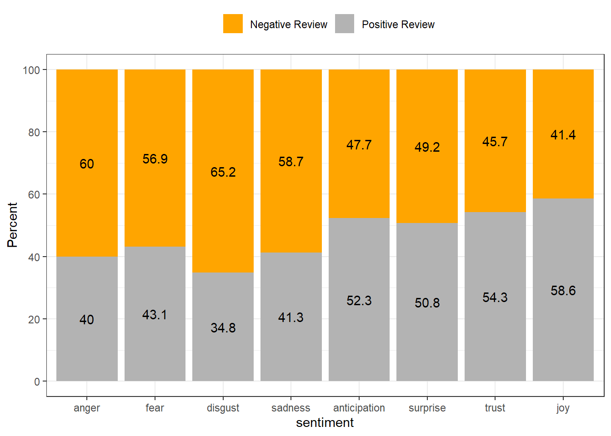

Section 4 Sentiment Analysis
This part of the workshop showcases how to perform SA on textual data using R. The analysis shown here is in parts based on the 2nd chapter of Text Mining with R - the e-version of this chapter on sentiment analysis can be found here.
4.1 What is Sentiment Analysis?
Sentiment Analysis (SA) extracts information on emotion or opinion from natural language (Silge and Robinson 2017). Most forms of SA provides information about positive or negative polarity, e.g. whether a tweet is positive or negative. As such, SA represents a type of classifier that assigns values to texts. As most SA only provide information about polarity, SA is often regarded as rather coarse-grained and, thus, rather irrelevant for the types of research questions in linguistics.
In the language sciences, SA can also be a very helpful tool if the type of SA provides more fine-grained information. In the following, we will perform such a information-rich SA. The SA used here does not only provide information about polarity but it will also provide association values for eight core emotions.
The more fine-grained output is made possible by relying on the Word-Emotion Association Lexicon (Mohammad and Turney 2013), which comprises 10,170 terms, and in which lexical elements are assigned scores based on ratings gathered through the crowd-sourced Amazon Mechanical Turk service. For the Word-Emotion Association Lexicon raters were asked whether a given word was associated with one of eight emotions. The resulting associations between terms and emotions are based on 38,726 ratings from 2,216 raters who answered a sequence of questions for each word which were then fed into the emotion association rating (cf. Mohammad and Turney 2013). Each term was rated 5 times. For 85 percent of words, at least 4 raters provided identical ratings. For instance, the word cry or tragedy are more readily associated with SADNESS while words such as happy or beautiful are indicative of JOY and words like fit or burst may indicate ANGER. This means that the SA here allows us to investigate the expression of certain core emotions rather than merely classifying statements along the lines of a crude positive-negative distinction.
We start by writing a function that clean the data. This allows us to feed our texts into the function and avoids duplicating code. Also, this showcases how you can write functions.
txtclean <- function(x, title){
require(dplyr)
require(stringr)
require(tibble)
x <- x %>%
iconv(to = "UTF-8") %>%
base::tolower() %>%
paste0(collapse = " ") %>%
stringr::str_squish()%>%
stringr::str_split(" ") %>%
unlist() %>%
tibble::tibble() %>%
dplyr::select(word = 1, everything()) %>%
dplyr::mutate(type = title) %>%
dplyr::anti_join(stop_words) %>%
dplyr::mutate(word = str_remove_all(word, "\\W")) %>%
dplyr::filter(word != "")
}Process and clean texts.
# process text data
posreviews_clean <- txtclean(posreviews, "Positive Review")
negreviews_clean <- txtclean(negreviews, "Negative Review")
# inspect
str(posreviews_clean); str(negreviews_clean)## tibble [95,046 × 2] (S3: tbl_df/tbl/data.frame)
## $ word: chr [1:95046] "reviewers" "mentioned" "watching" "1" ...
## $ type: chr [1:95046] "Positive Review" "Positive Review" "Positive Review" "Positive Review" ...## tibble [90,190 × 2] (S3: tbl_df/tbl/data.frame)
## $ word: chr [1:90190] "basically" "family" "boy" "jake" ...
## $ type: chr [1:90190] "Negative Review" "Negative Review" "Negative Review" "Negative Review" ...Now, we combine the data with the Word-Emotion Association Lexicon (Mohammad and Turney 2013).
reviews_annotated <- rbind(posreviews_clean, negreviews_clean) %>%
dplyr::group_by(type) %>%
dplyr::mutate(words = n()) %>%
dplyr::left_join(tidytext::get_sentiments("nrc")) %>%
dplyr::mutate(type = factor(type),
sentiment = factor(sentiment))
# inspect data
reviews_annotated %>%
as.data.frame() %>%
head(10)## word type words sentiment
## 1 reviewers Positive Review 95046 <NA>
## 2 mentioned Positive Review 95046 <NA>
## 3 watching Positive Review 95046 <NA>
## 4 1 Positive Review 95046 <NA>
## 5 oz Positive Review 95046 <NA>
## 6 episode Positive Review 95046 <NA>
## 7 hooked Positive Review 95046 negative
## 8 right Positive Review 95046 <NA>
## 9 happened Positive Review 95046 <NA>
## 10 methe Positive Review 95046 <NA>The resulting table shows each word token by the type of review in which it occurred, the overall number of tokens in the type of review, and the sentiment with which a token is associated.
4.2 Exporting the results
To export the table with the results as an MS Excel spreadsheet, we use write_xlsx. Be aware that we use the here function to save the file in the current working directory.
4.3 Summarizing results
After preforming the sentiment analysis, we can now display and summarize the results of the SA visually and add information to the table produced by the sentiment analysis (such as calculating the percentages of the prevalence of emotions across the review type and the rate of emotions across review types).
reviews_summarised <- reviews_annotated %>%
dplyr::group_by(type) %>%
dplyr::group_by(type, sentiment) %>%
dplyr::summarise(sentiment = unique(sentiment),
sentiment_freq = n(),
words = unique(words)) %>%
dplyr::filter(is.na(sentiment) == F) %>%
dplyr::mutate(percentage = round(sentiment_freq/words*100, 1),
sentiment = factor(sentiment,
levels = c("anger", "fear", "disgust", "sadness", "anticipation", "surprise", "trust", "joy", "negative", "positive"))) %>%
dplyr::group_by(sentiment) %>%
dplyr::mutate(total = sum(percentage)) %>%
dplyr::group_by(sentiment, type) %>%
dplyr::mutate(ratio = round(percentage/total*100, 1))
# inspect data
reviews_summarised %>%
as.data.frame() %>%
head(10)## type sentiment sentiment_freq words percentage total ratio
## 1 Negative Review anger 4537 90190 5.0 8.4 59.5
## 2 Negative Review anticipation 4491 90190 5.0 10.5 47.6
## 3 Negative Review disgust 3992 90190 4.4 6.8 64.7
## 4 Negative Review fear 5512 90190 6.1 10.8 56.5
## 5 Negative Review joy 3657 90190 4.1 9.8 41.8
## 6 Negative Review negative 9245 90190 10.3 17.3 59.5
## 7 Negative Review positive 9153 90190 10.1 22.4 45.1
## 8 Negative Review sadness 4811 90190 5.3 9.0 58.9
## 9 Negative Review surprise 2546 90190 2.8 5.8 48.3
## 10 Negative Review trust 5255 90190 5.8 12.7 45.7To export the table with the results as an MS Excel spreadsheet, we use write_xlsx. Be aware that we use the here function to save the file in the current working directory.
4.4 Visualizing results
After performing the SA, we can display the emotions by review type ordered from more negative (red) to more positive (blue).
reviews_summarised %>%
dplyr::filter(sentiment != "positive",
sentiment != "negative") %>%
ggplot(aes(type, percentage, fill = sentiment, label = percentage)) +
geom_bar(stat="identity", position=position_dodge()) +
geom_text(hjust=1.5, position = position_dodge(0.9)) +
scale_fill_brewer(palette = "RdBu") +
theme_bw() +
theme(legend.position = "right") +
coord_flip()We can also visualize the results and show the rate to identify what type is more “positive” and what type is more “negative”.
reviews_summarised %>%
dplyr::filter(sentiment != "positive",
sentiment != "negative") %>%
ggplot(aes(sentiment, ratio, fill = type, label = ratio)) +
geom_bar(stat="identity",
position=position_fill()) +
geom_text(position = position_fill(vjust = 0.5)) +
scale_fill_manual(name = "", values=c("orange", "gray70")) +
scale_y_continuous(name ="Percent", breaks = seq(0, 1, .2), labels = seq(0, 100, 20)) +
theme_bw() +
theme(legend.position = "top")
4.5 Identifying important emotives
We now check, which words have contributed to the emotionality scores. In other words, we investigate, which words are most important for the emotion scores within each review type. For the sake of interpretability, we will remove several core emotion categories and also the polarity.
reviews_importance <- reviews_annotated %>%
dplyr::filter(!is.na(sentiment),
sentiment != "anticipation",
sentiment != "surprise",
sentiment != "disgust",
sentiment != "negative",
sentiment != "sadness",
sentiment != "positive") %>%
dplyr::mutate(sentiment = factor(sentiment, levels = c("anger", "fear", "trust", "joy"))) %>%
dplyr::group_by(type) %>%
dplyr::count(word, sentiment, sort = TRUE) %>%
dplyr::group_by(type, sentiment) %>%
dplyr::top_n(5) %>%
dplyr::mutate(score = n/sum(n))
# inspect data
reviews_importance %>%
as.data.frame() %>%
head(10)## type word sentiment n score
## 1 Negative Review bad anger 563 0.5198523
## 2 Negative Review bad fear 563 0.4622332
## 3 Positive Review love joy 323 0.3886883
## 4 Positive Review watch fear 286 0.4056738
## 5 Negative Review watch fear 278 0.2282430
## 6 Positive Review real trust 224 0.3072702
## 7 Negative Review pretty trust 174 0.2360923
## 8 Negative Review pretty joy 174 0.2668712
## 9 Negative Review director trust 154 0.2089552
## 10 Negative Review real trust 148 0.2008141We can now visualize the top three words for the remaining core emotion categories.
reviews_importance %>%
dplyr::group_by(type) %>%
slice_max(score, n = 20) %>%
dplyr::arrange(desc(score)) %>%
dplyr::ungroup() %>%
ggplot(aes(x = reorder(word, score), y = score, fill = word)) +
facet_wrap(type~sentiment, ncol = 4, scales = "free_y") +
geom_col(show.legend = FALSE) +
coord_flip() +
labs(x = "Words")If you are interested in learning more about SA in R, Silge and Robinson (2017) is highly recommended as it goes more into detail and offers additional information.